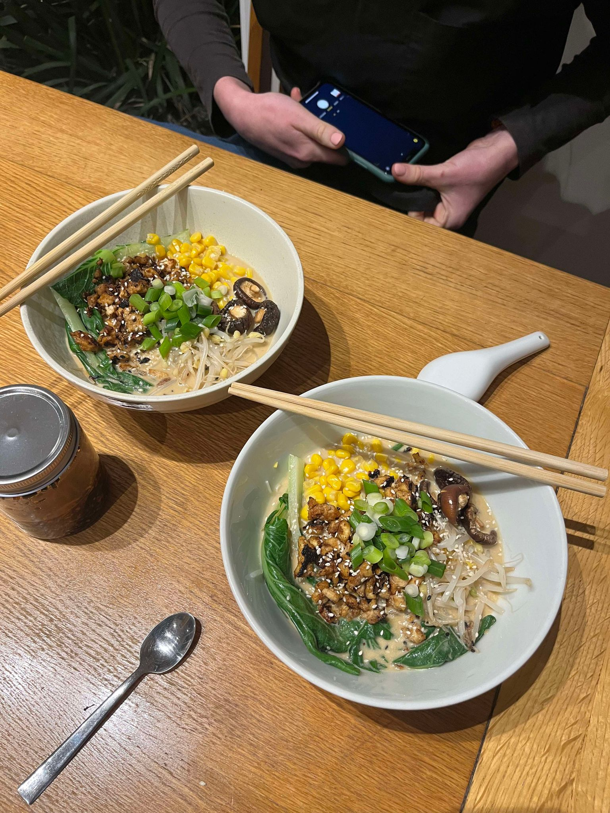

Bring a large saucepan of salted water to a boil, add the noodles and cook according to the packet. About 30 seconds before they are ready, add the asian greens and bean sprouts and blanch quickly. Drain and refresh under cold running water, then drain again.
For the seasoned tofu, place a large frying pan over medium heat, add the sesame oil, garlic and ginger and fry for about 30-60 seconds until fragrant. Add the crumbled tofu, season with sea salt and fry over high heat for 2 minutes. Add the mirin, tamari or soy sauce and miso paste and cook, undisturbed for another 2-3 minutes, until the tofu is crispy. Remove from heat and set aside.
Prepare the soup base by wisking together the tahini, vinegar, tamari, rayu or chilli oil until a chunky paste forms. Pour the stock and soy milk into a saucepan and heat over medium-low heat until hot, but not boiling. Turn off the heat and whisk the tahini paste. Taste and season with sea salt if needed.
Place a handful of ramen noodles, greens and beansprouts in each bowl and top with the seasoned tofu and corn. Ladle in the soup base, covering the noodles and vegetables. Top with sesame seeds, spring onion and a few drops of chilli oil to serve.
